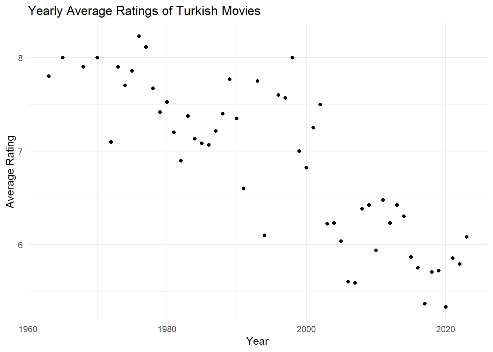

In this assignment, I will scrape raw data from IMDb, tidy it, and extract insightful results. IMDb has an Advanced Search feature on https://m.imdb.com/search that allows us to list available movie data on IMDb using various filters. Unfortunately, IMDb does not provide any download option for the results. Fortunately, we are taking the EMU430 course and thanks to what we learned in this course, will be able to scrape the HTML and then extract the results.
Libraries
So let’s start with uploading the libraries.
library(tidyverse) # for everything :)
── Attaching core tidyverse packages ──────────────────────── tidyverse 2.0.0 ──
✔ dplyr 1.1.3 ✔ readr 2.1.4
✔ forcats 1.0.0 ✔ stringr 1.5.0
✔ ggplot2 3.4.4 ✔ tibble 3.2.1
✔ lubridate 1.9.3 ✔ tidyr 1.3.0
✔ purrr 1.0.2
── Conflicts ────────────────────────────────────────── tidyverse_conflicts() ──
✖ dplyr::filter() masks stats::filter()
✖ dplyr::lag() masks stats::lag()
ℹ Use the conflicted package (<http://conflicted.r-lib.org/>) to force all conflicts to become errors
library(rvest) # for HTML scraping
Attaching package: 'rvest'
The following object is masked from 'package:readr':
guess_encoding
library(stringr) # for string processinglibrary(scales) #for formatting
Attaching package: 'scales'
The following object is masked from 'package:purrr':
discard
The following object is masked from 'package:readr':
col_factor
library(gridExtra) #for showing data
Attaching package: 'gridExtra'
The following object is masked from 'package:dplyr':
combine
IMDb’s Advanced Title Search interface (they started using this a few times ago) allows viewing only 50 movies simultaneously. Therefore, using the resulting URL of my search, I could only scrap data for the first 50 movies. Adding “&count=250” to the end of your search URL increased the list to 250 movies. And I completed my search by using partial searches with the “Release Date” filter of IMDb. I created 2 different URLs that are limited to 2010-2023, and before 2010, then created a vector that will contain the 2 URL’s I obtained from the above searches.
Now, we have to reach the information inside URL’s. That’s how we read them:
data_html <-c()for (x in data_urls) { a <-read_html(x) data_html <-c(data_html, list(a))}
2. Scrapping Data
Titles
After that, we are finally starting to see some data! By using SelectorGadget , we found proper CSS selector to get title data from HTML code and with using html_text() function, we returned just the raw underlying text.
But, it seems like there are some problems with our data. Firstly, my professor said I need to find 470 movies, but now i have 474 elements in vector we created. Let’s fix it first.
This cleaned the other titles that website does have excluding movie titles. But we’re facing with another problem now. We just want to get the names of the data.
To fix that, I used the function gsub with a for loop. This function search for matches to argument pattern within each element of a character vector and perform replacement.
The pattern "^[0-9]+\\.\\s*" is a regular expression that matches a sequence at the beginning of a string (^) consisting of one or more digits ([0-9]+), followed by a period (\\.), and then any number of whitespace characters (\\s*). The replacement string "" indicates that this matched sequence is being replaced with an empty string.
titles_cleaned <-c()for (x in titles_list) { a <-gsub("^[0-9]+\\.\\s*", "", x) titles_cleaned <-c(titles_cleaned, a)}head(titles_cleaned)
Unfortunately, in the website we’re using, the creators store different data together in one selector. So, we need to create some filters to acquire the data we want.
years_cleaned <-c()for (a in title_metadata_list) { x <-grep("^[0-9]+$", a, value =TRUE) years_cleaned <-c(years_cleaned, x)}summary(years_cleaned)
Length Class Mode
470 character character
It created a list that have characters we want, but to proceed and filter them properly, we need to make them integer.
Min. 1st Qu. Median Mean 3rd Qu. Max.
1963 1999 2010 2005 2016 2023
Durations
It is showing the summary data of integer list. That was what we wanted. Now, let’s look the metadata again to find how to get durations of the movies.
Can’t you see? This includes durations too! Let’s catch them and put in a list.
duration_elements <-c()for (a in title_metadata_list) { x <-grep("[hm]", a, value =TRUE) duration_elements <-c(duration_elements, x)}head(duration_elements)
And the same issue is appearing in here too. They are storing the ratings and rounded versions of number of votes together. I remember that I can get the exact vote number in a different CSS Selector, so let’s just get the rating data from here.
Title Year Duration Rating
Length:470 Min. :1963 Min. : 48.00 Min. :1.000
Class :character 1st Qu.:1999 1st Qu.: 92.25 1st Qu.:5.800
Mode :character Median :2010 Median :104.00 Median :6.750
Mean :2005 Mean :104.34 Mean :6.375
3rd Qu.:2016 3rd Qu.:114.00 3rd Qu.:7.400
Max. :2023 Max. :197.00 Max. :9.200
Vote
Min. : 2510
1st Qu.: 3526
Median : 5203
Mean : 9508
3rd Qu.: 9997
Max. :109851
3. Exploratory Data Analysis
Okay it was cool enough that the part we scrapped the data, but now we need to head for the Exploratory Data Analysis.
We together will create visualizations to address the following questions, and provide insightful facts about the Turkish movie industry. The questions will guide our analysis.
A.
Arrange your data frame in descending order by Rating. Present the top 5 and bottom 5 movies based on user ratings. Have you watched any of these movies? Do you agree or disagree with their current IMDb Ratings?
Title Year Duration Rating Vote
1 Müjde 2022 48 1.2 9920
2 15/07 Safak Vakti 2021 95 1.2 20605
3 Cumali Ceber 2 2018 100 1.2 10227
4 Cumali Ceber: Allah Seni Alsin 2017 100 1.0 39265
5 Reis 2017 108 1.0 73971
Actually, I never watched the bottom ones (just as like any person that has self-respect) but I did some of the top ones. Almost all of the best ones the old Turkish movies that named “Yeşilçam”1.
B.
Check the ratings of 2-3 of your favorite movies. What are their standings?
my_favorites <-filter(scrapped_data, Title %in%c("G.O.R.A.","Ölümlü Dünya 2","Organize Isler"))my_favorites %>%select(Title, Rating)
Title Rating
1 Organize Isler 7.4
2 G.O.R.A. 8.0
3 Ölümlü Dünya 2 7.5
These are my favorites.
C.
Considering that audience rating is a crucial indicator of movie quality, what can you infer about the average ratings of Turkish movies over the years? Calculate yearly rating averages and plot them as a scatter plot. Hint: Use functions like group_by(), summarise(), mean(), ggplot(), geom_point(). Similarly, plot the number of movies over the years. You might observe that using yearly averages could be misleading due to the increasing number of movies each year. As an alternative solution, plot box plots of ratings over the years (each year having a box plot showing statistics about the ratings of movies in that year). What insights do you gather from the box plot?
yearly_average <- scrapped_data %>%group_by(Year) %>%summarise(AverageRating =mean(Rating))# Number of movies over the yearsmovies_per_year <- scrapped_data %>%group_by(Year) %>%summarise(NumberOfMovies =n())ggplot(movies_per_year, aes(x = Year, y = NumberOfMovies)) +geom_point() +theme_minimal() +labs(title ="Number of Turkish Movies Released Each Year",x ="Year",y ="Number of Movies")
# Yearly rating averagesggplot(yearly_average, aes(x = Year, y = AverageRating)) +geom_point() +theme_minimal() +labs(title ="Yearly Average Ratings of Turkish Movies",x ="Year",y ="Average Rating")

# box plots of ratings over the yearsggplot(scrapped_data, aes(x =as.factor(Year), y = Rating)) +geom_boxplot() +theme_minimal() +theme(axis.text.x =element_text(angle =90, vjust =0.5, hjust=1))+labs(title ="Box Plot of Movie Ratings Over the Years",x ="Year",y ="Rating")
Before looking at the box plot data, we may say that average ratings have swiftly decreased over the years, but in the box plot, we can see the medians have not changed that much, but poor-quality movies are magnificently increased.
D.
Do you believe there is a relationship between the number of votes a movie receivedand its rating? Investigate the correlation between Votes and Ratings.
ggplot(scrapped_data, aes(x = Vote, y = Rating)) +geom_point(alpha =0.5) +geom_smooth(method ="lm", color ="red") +scale_x_log10(labels = scales::label_number_auto()) +theme_minimal() +labs(title ="Correlation Between Votes and Ratings",x ="Number of Votes",y ="Rating")
`geom_smooth()` using formula = 'y ~ x'
Thanks to the regression line, we can see that there is a small correlation between number of votes and ratings.
E.
Do you believe there is a relationship between a movie’s duration and its rating?Investigate the correlation between Duration and Ratings.
ggplot(scrapped_data, aes(x = Duration, y = Rating)) +geom_point(alpha =0.5) +geom_smooth(method ="lm", color ="blue") +scale_x_log10() +theme_minimal() +labs(title ="Relationship Between Movie Duration and Rating",x ="Duration (minutes)",y ="Rating")
`geom_smooth()` using formula = 'y ~ x'
As we can guess, there is no correlation between duration and rating.
4. Turkish movies that in top 1000 on IMDb
Now, I used IMDb’s Advanced Title Search interface with The Title Type set to “Movie” only, the Country set to “Turkey” with the option “Search country of origin only” active, and the Awards & Recognation set to “IMDB Top 1000”. I found a total of 11 movies.
I did the same process again that I’ve done for first scrape.
new_metadata_list <- new_data_html %>%html_elements(".sc-43986a27-8.jHYIIK.dli-title-metadata-item") %>%html_text()new_years_cleaned <-c()for (a in new_metadata_list) { x <-grep("^[0-9]+$", a, value =TRUE) new_years_cleaned <-c(new_years_cleaned, x)}new_years_cleaned <-as.integer(new_years_cleaned)
New Data Frame
new_data <-data.frame(Title = new_titles_cleaned, Year = new_years_cleaned)
Analysis
Perfectly executed everything, but we have a new data frame with Turkish movies in the top 1000, containing only the title and year. Now I’ll use my initial scrapped_data frame and an appropriate join operation to fill in the duration, rating, and votes attributes of the new_data frame.
joined_data <- new_data %>%left_join(scrapped_data, by =c("Title", "Year"))
I need to order the 11 movies based on their rank to see if they are the same as first high-rated 11 movies in my initial data frame.
As we see, they’re not identical. This implies that IMDb doesn’t use only the rankings. Firstly, of course they look at their rankings but it is not the only criteria. They have to pass the minimum number of ratings threshold. And some different criteria exist for this algorithm. For example, they shared their algorithm to create Top 250 list.
The following formula is used to calculate the Top Rated 250 titles. This formula provides a true ‘Bayesian estimate’, which takes into account the number of votes each title has received, minimum votes required to be on the list, and the mean vote for all titles:
weighted rating (WR) = (v ÷ (v+m)) × R + (m ÷ (v+m)) × C
Where:
R = average for the movie (mean) = (rating)
v = number of votes for the movie = (votes)
m = minimum votes required to be listed in the Top Rated 250 list (currently 25,000)
Do you know that where “Yeşilçam” name comes from? Yeşilçam is a street located in the Beyoğlu district of Istanbul, close to Taksim. Since the offices of most of the film companies were located on this street in the pre-1980 period, Turkish cinema began to be known as Yeşilçam. It literally means Green Pine in Turkish.↩︎